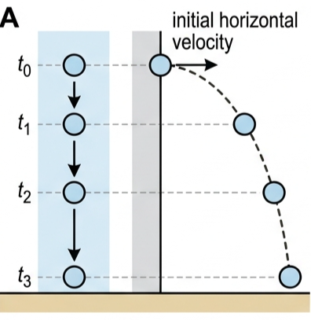
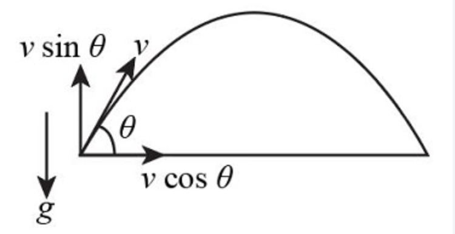
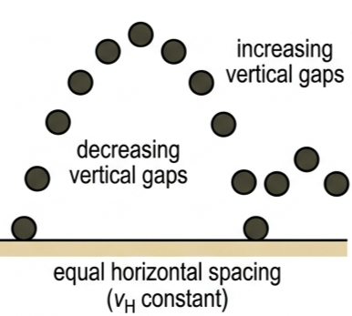
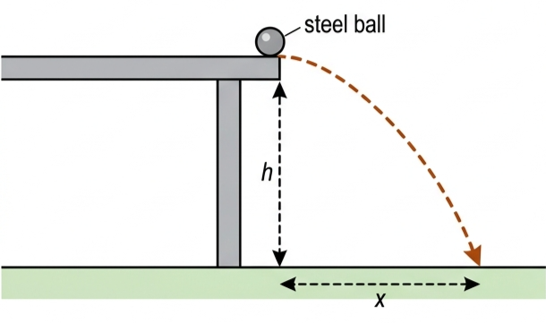
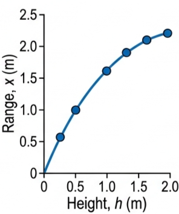
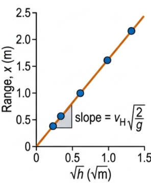

A projectile moves under gravity alone once launched. This lesson resolves its velocity into horizontal and vertical components and shows why treating them independently unlocks every projectile problem.
🎯 Hook – drop it or throw it, it lands at the same time
Drop a ball from a height, and at the same instant fire an identical ball horizontally from the same height. Ignoring air resistance, both balls hit the ground at exactly the same moment — no matter how fast the second one was launched sideways. The horizontal motion has no effect whatsoever on the vertical fall.

Fig 1 — A dropped ball and a ball projected horizontally from the same height fall equal vertical distances in the same time (Fig A1.41).
💡 Diagnostic question (think — then read on) — A stone is thrown horizontally from a cliff. Ignoring air resistance, what happens to its horizontal speed as it falls? Answer: it stays constant. There is no horizontal force acting on it, so there is no horizontal acceleration.
📐 Resolving velocity into components
A projectile is an object that has been projected through the air — fired, launched, thrown, kicked or hit — and which then moves only under the action of gravity (and air resistance, if significant). It has no ability to power or control its own motion. The instantaneous velocity of a projectile at any time can be resolved into vertical and horizontal components, \(v_{\text{V}}\) and \(v_{\text{H}}\).
Components of velocity
$$v_{\text{V}} = v\sin\theta$$
$$v_{\text{H}} = v\cos\theta$$

Fig 2 — Resolving a projectile's velocity \(v\) into components at angle \(\theta\) above the horizontal (Fig A1.38).
⚠️ Common mistake: make sure the angle \(\theta\) is always the angle between the velocity and the horizontal — never the vertical, never the trajectory itself.
🌐 Horizontal and vertical motion are independent
Components perpendicular to each other can be analysed separately. Any object close to the Earth's surface affected only by gravity accelerates towards the Earth at \(9.8\,\text{m s}^{-2}\) — this remains true even if the object is also moving sideways. If there is no air resistance, the horizontal component of a projectile's velocity stays constant until it hits something.
A stroboscopic photograph of a bouncing ball, taken at equal time intervals, shows this directly: the horizontal spacing between successive images is always the same (because \(v_{\text{H}}\) is constant), while the vertical spacing decreases as the ball decelerates on the way up and increases as it accelerates on the way down. The path followed by a projectile is its trajectory, and it is parabolic if air resistance is negligible. The horizontal distance covered is called the range.

Fig 3 — Stroboscopic image of a bouncing ball: equal time intervals between images (Fig A1.40).
⏱️ Time of flight and range from a height
For a projectile launched (or fired) horizontally from height \(h\), the time of flight is found entirely from the vertical motion, starting from rest vertically:
Time to fall from height h
$$h = \tfrac{1}{2}gt^{2}$$
Then the range comes from the constant horizontal velocity:
$$x = v_{\text{H}} \cdot t$$

Fig 4 — Investigating range \(x\) as height \(h\) is varied (Fig A1.42).
🔑 Top tip: the vertical component tells you the times (to maximum height, and to hit the ground) and the maximum height reached; the horizontal component then gives you the range.
📈 Graph mastery
Graph type
Axes (X, Y)
Shape
What to read
Range vs height
\(h\) (m), \(x\) (m)
Concave down (\(x \propto \sqrt{h}\))
\(x\) increases with \(h\), but with diminishing returns
Linearised range
\(\sqrt{h}\) (\(\sqrt{\text{m}}\)), \(x\) (m)
Straight line through the origin
Gradient \(= v_{\text{H}}\sqrt{2/g}\)
Horizontal velocity vs time
\(t\) (s), \(v_{\text{H}}\) (m/s)
Horizontal line
\(v_{\text{H}}\) is constant
Vertical velocity vs time
\(t\) (s), \(v_{\text{V}}\) (m/s)
Straight line, slope \(-g\)
Slope \(= -9.8\,\text{m s}^{-2}\)

Fig 5 — Direct plot: \(x\) vs \(h\) (concave down).

Fig 6 — Linearised: \(x\) vs \(\sqrt{h}\) (straight line).
✍️ Worked example 1 – tennis serve (A1.9)
1
Identify: a tennis player strikes the ball so it leaves the racket at velocity \(v\) at angle \(\theta\) below the horizontal. Find the vertical and horizontal components of this velocity.
Fig 8 — Bullet fired horizontally at 524 m/s from 22.0 m, landing 1.11 km away.
✍️ Worked example 3 – projectile at an angle from a height (A1.11)
A stone is thrown upwards from a height above the ground at a given speed and angle. Ignoring air resistance, find (a) its maximum height, (b) its vertical velocity on impact, (c) the time to reach the ground, (d) the horizontal range, and (e) the velocity of impact.
1
Identify: resolve the initial velocity first; use the vertical component for times and heights, the horizontal component for range, and combine both for the final impact velocity.
Equation: (a) \(v^2=u^2+2as\) with \(v=0\) at the top. (b) \(v^2=u^2+2as\) over the full fall. (c) \(v=u+at\). (d) \(x=v_{\text{H}}t\). (e) \(v_i^2 = v_{\text{H}}^2+v_{\text{V}}^2\), \(\tan\theta = v_{\text{V}}/v_{\text{H}}\).
4
Answer: (a) max height \(= 10.3\,\text{m}\) above release (11.9 m above the ground). (b) impact \(v_{\text{V}} = 15.3\,\text{m s}^{-1}\) downwards. (c) \(t = 3.00\,\text{s}\). (d) \(x = 33.3\,\text{m}\). (e) \(v_i = 18.9\,\text{m s}^{-1}\) at \(54^\circ\) below horizontal.
Fig 9 — Worked example 3 geometry (Fig A1.43): launched at 18.0 m/s, 52°, from 1.6 m.
🌍 Real-world: finding the range–height relationship
A steel ball projected horizontally from a table edge lands further away the higher the table is. Measuring range \(x\) for several heights \(h\) and plotting the results gives the concave-down curve of the Graph mastery section; plotting \(x\) against \(\sqrt{h}\) straightens it into a line through the origin, with gradient \(v_{\text{H}}\sqrt{2/g}\).
✓ Examiner tip: always state the assumption of negligible air resistance before drawing conclusions from an \(x\)–\(h\) investigation — the whole \(x \propto \sqrt{h}\) relationship depends on it.
🚀 HL Extension – projectiles with air resistance
Fluid resistance affects a projectile's time of flight, trajectory, velocity, acceleration, range and can bring it to a terminal speed. Drag opposes the velocity at every instant, so it no longer acts only vertically — it removes energy from both components, and the trajectory is no longer a symmetric parabola.
Challenge: how does air resistance affect the range of a projectile compared with the no-drag case? Answer: it reduces it. Drag continually removes kinetic energy, so \(v_{\text{H}}\) is no longer constant and the projectile's speed is smaller throughout the flight — it covers less horizontal distance before landing.
⚠️ Trap corner – common mistakes
Misconception
Correct view
\(\theta\) is measured from the vertical, or from the trajectory itself.
\(\theta\) is always the angle between the velocity and the horizontal.
The vertical and horizontal motions affect each other.
They are completely independent and must be analysed separately.
A ball projected horizontally takes longer to fall than one simply dropped from the same height.
Both reach the ground in exactly the same time — horizontal motion does not affect vertical fall.
The horizontal component of velocity changes during the flight.
It stays constant if air resistance is negligible; only the vertical component changes.
⚠️ Most common slip: treating the initial speed \(v\) itself as \(v_{\text{H}}\) or \(v_{\text{V}}\). Always resolve first: \(v_{\text{H}} = v\cos\theta\), \(v_{\text{V}} = v\sin\theta\).
\(v_{\text{H}} = v\cos\theta\)\(v_{\text{V}} = v\sin\theta\)\(a_{\text{H}} = 0\)\(a_{\text{V}} = -g\)components independenttrajectory is parabolic\(x \propto \sqrt{h}\)\(\theta\) always from horizontal
Practice check — multiple choice
1. A stone is thrown horizontally from a cliff. Ignoring air resistance, what happens to its horizontal speed as it falls?
A It increases
B It decreases
C It stays constant
D It becomes zero at the top of the fall
2. Two identical balls are released at the same instant from the same height: one is dropped, the other is thrown horizontally. Ignoring air resistance, which lands first?
A The dropped ball
B The thrown ball
C Both land at the same time
D It depends on the horizontal speed
3. A projectile has velocity \(v\) at angle \(\theta\) above the horizontal. Which expression gives its vertical component?
A \(v\sin\theta\)
B \(v\cos\theta\)
C \(v\tan\theta\)
D \(v/\sin\theta\)
4. On a graph of horizontal velocity \(v_{\text{H}}\) against time for a projectile with negligible air resistance, the graph is:
A A straight line increasing
B A straight line decreasing
C A horizontal line
D A parabola
Practice check — fill in the blanks
Complete the statements:
The horizontal component of velocity is \(v_{\text{H}} = v\,\)\(\theta\), and the vertical component is \(v_{\text{V}} = v\,\)\(\theta\). If air resistance is negligible, the horizontal acceleration is m/s², while the magnitude of the vertical acceleration is m/s². The path followed by a projectile is called its , and its shape (ignoring air resistance) is .
Exam‑style questions
Exam question · Calculate
Q1. A ball is kicked horizontally from the top of a wall 8.0 m high with a speed of 9.5 m s⁻¹. Ignoring air resistance, calculate (a) the time taken to reach the ground and (b) the horizontal distance travelled. [3 marks]
Q2. Explain why the horizontal and vertical components of a projectile's velocity can be analysed independently of one another. [3 marks]
✓ The only force acting (ignoring air resistance) is gravity, which acts vertically downward. ✓ A force in one direction cannot produce an acceleration in a perpendicular direction, so there is no horizontal acceleration. ✓ The horizontal velocity therefore stays constant while the vertical velocity changes at \(g\), completely independently.
Exam question · Determine
Q3. A javelin is thrown at 26 m s⁻¹ at 40° above the horizontal, released from a height of 1.8 m. Ignoring air resistance, determine the time of flight and the horizontal range. [4 marks]
✓ \(v_{\text{V}}=26\sin40^\circ=16.7\,\text{m s}^{-1}\), \(v_{\text{H}}=26\cos40^\circ=19.9\,\text{m s}^{-1}\). ✓ Taking down as the landing displacement, \(-1.8=16.7t-4.9t^2\), solving the quadratic gives \(t=3.52\,\text{s}\). ✓ \(x=v_{\text{H}}t=19.9\times3.52\) ✓ \(=70\,\text{m}\).